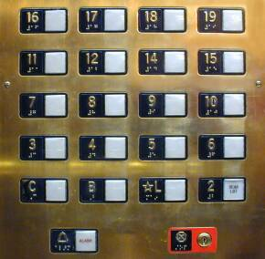

Para efeitos da nota atribuída à resolução de exercícios ao longo do semestre - Submeter até 23:59 de 1 de Maio
(o problema continuará depois disponível para submissão, mas sem contar para a nota)
[para perceber o contexto do problema deve ler o guião da aula #05]
Muitas culturas têm superstições com números. Em Portugal, tal como noutros paises ocidentais, o 13 é considerado um número azarado. Em muitos países do este Asiático o número do azar é o 4, sendo evitado a todos os custos, pois a maneira como é pronunciado é muita semelhante à palavra morte. Já na Rússia o número a evitar é o 40. Estas superstições são tão fortes que os números são evitados quando possível. Existem aviões sem fila 13, prédios sem 13º andar e e urbanizações onde o número da habitação passa diretamente do 12 para o 14.
Num qualquer país onde o número do azar seja A, um número sortudo é um número inteiro positivo que não tenha nenhuma ocorrência de A nos seus dígitos. Por exemplo, se A=13, os números 14, 123, 5153 ou 789 seriam números sortudos, ao passo que 13, 1132, 513 ou 13913 não o seriam.
Existem mesmo muitos números sortudos! Por exemplo, a sequência de números sortudos na China (onde A=4) é a seguinte:
1 2 3 5 6 7 8 9 10 11 12 13 15 16 17 18 19 20 21 22 23 25 26 ...
Se num prédio chinês apenas fossem usados números sortudos, o andar marcado como 16º seria na realidade o 14º andar, ou seja, o 16 é o 14º número da sequência de números sortudos. E se estivesses por exemplo no andar marcado como 80, qual seria o verdadeiro andar? No fundo o que queres saber é, dado um qualquer número sortudo, qual a sua posição, ou o seu número de ordem, na sequência crescente de números sortudos.
Tens de fazer um programa para te ajudar a resolver este dilema! Claro que gostavas que o programa fosse usável em qualquer parte do mundo, e por isso tem de aceitar um qualquer número azarado a evitar.
Dado um número do azar A e Q questões, cada uma com um número sortudo Ni, a tua tarefa é calcular qual a posição Pi (nº ordem) de cada um dos Ni na sequência de números sortudos, ou seja, números que não contenham ocorrências de A.
Na primeira linha vêm dois inteiros A e Q, indicando o número azarado a evitar e o número de questões a considerar. Seguem-se Q linhas, cada uma contendo um número sortudo Ni.
O output deve conter Q linhas, uma para cada número sortudo, contendo contendo Pi, a posição de cada um dos respetivos números na sequência de números sortudos.
São garantidos os seguintes limites em todos os casos de teste que irão ser colocados ao programa:
| 1 ≤ A ≤ 109 | Número azarado a evitar | |
| 1 ≤ Q ≤ 100 | Número de questões | |
| 1 ≤ Ni ≤ 109 | Números sortudos dos quais queremos saber a posição |
Os casos de teste deste problema estão organizados em 5 grupos com restrições adicionais diferentes:
| Grupo | Nº de Pontos | Restrições adicionais |
|---|---|---|
| 1 | 30 | Ni ≤ 50 000 |
| 2 | 10 | Ni ≤ 5 000 000 |
| 3 | 20 | A tem apenas um dígito |
| 4 | 20 | Todos os dígitos de A são diferentes |
| 5 | 20 | (nenhuma restrição adicional) |
4 5 16 2 26 12 98
14 2 23 11 79
Quando o número do azar é 4, o 16 está na 14ª posição, o 2 está na 2ª posição, o 26 está na 23ª posição, o 12 está na 11ª posição e o 98 está na 79ª posição.
Posição: 1 2 3 4 5 6 7 8 9 10 11 12 13 14 15 16 17 18 19 20 21 22 23 ----------------------------------------------------------------------------- Nº Sortudos: 1 2 3 5 6 7 8 9 10 11 12 13 15 16 17 18 19 20 21 22 23 25 26 ...
13 4 12 234 5467 89
12 221 5253 88
Quando o número do azar é 13, o 12 está na 12ª posição, O 234 está na 221ª posição, o 5467 está na 5253ª posição e o 89 está na 88ª posição.
Desenho e Análise de Algoritmos (CC2001)
DCC/FCUP - Faculdade de Ciências da Universidade do Porto